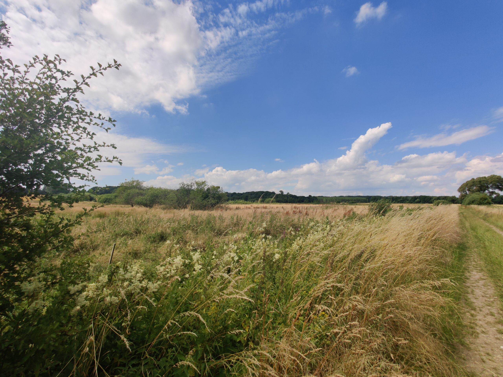

Forside > Naturområder
Naturområder

Verninge Mose på 13,8 hektar, og Åsemosen på 62 hektar finder du ved Verninge. I tæt samarbejde med lodsejere er området blevet en unik naturperle, der samtidig har til formål at mindske kvælstofudledningen til vores kystvande. Der er afmærkede vandreruter i både Verninge Mose og Åsemosen.
Tag din partner, børn eller dem du elsker i hånden, og nyd naturen.
Verninge Mose

I Verninge Mose fører den 3 km lange vandrerute dig rundt i området. Fra udkigsposten er der god udsigt til fuglelivet. Afhængig af årstiden, kan der ses gæs, ænder, viber, rød glente og en række vadefugle der er på træk. På egen kan der findes flere forskellige plantearter, som kuglemuseurt, kattehale og vandmynte. For at holde området lysåbent, afgræsses det af kvæg, der kan gå ude året rundt.

Pak soveposen og madpakken og tag en overnatning i det nybygget shelter, og vågn op til ro, fuglesang og smuk natur.
Rute til Verninge mose
Parkeringsplads
Madpakkehus
Udkigsplads og bænk
Rute
Åsemosen

Åsemosen ligger mellem Nårup og Verninge, og er en del af en af Danmarks største kildepladser. På den 4,7 km lange rute, finder du den samme smukke naturliv som du finder ved Verninge Mose. Her er der etableret madpakkehus, hegn, trampestier og spang over de mest våde områder, så interesserede har mulighed for at gå i området. Stierne er forbundet til det eksisterende rekreative naturområde ved Verninge Mose og Nårup Bjerge.
Ruten til Åsemosen
Parkeringsplads
Madpakkehus
Udkigsplads og bænk
Rute